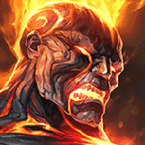

核心裝備
 黑焰火炬
黑焰火炬高頻技能命中多人時非常容易維持灼燒，與被動完美疊加。
 黎安卓的折磨
黎安卓的折磨百分比灼燒讓布蘭德不怕前排，ARAM 長團戰價值特別高。
 無限寶珠
無限寶珠敵人被持續壓低血線後能提高收尾傷害，幫助被動爆炸完成擊殺。
 死亡之帽
死亡之帽中後期直接放大整套連鎖爆發。
 虛空之杖
虛空之杖敵方開始堆魔抗後補穿透，確保灼燒仍能有效削血。

Brand · 範圍爆發／持續灼燒型法師
ARAM 的布蘭德不用勉強追單點秒殺，重點是把技能丟進人群讓被動與大絕反覆擴散。敵人越集中，你的黑焰與黎安卓價值越高。
本站評級理由：敵人被迫集中在單一路線，布蘭德被動、火柱與大絕的連鎖範圍傷害非常容易吃滿；即使自己先倒，也常能把燃燒傷害完整留在團戰裡。
截至 7.2b 未查到布蘭德額外 ARAM 百分比修正，本版以 100%／100% 基準呈現。
高頻技能命中多人時非常容易維持灼燒，與被動完美疊加。
百分比灼燒讓布蘭德不怕前排，ARAM 長團戰價值特別高。
敵人被持續壓低血線後能提高收尾傷害，幫助被動爆炸完成擊殺。
中後期直接放大整套連鎖爆發。
敵方開始堆魔抗後補穿透，確保灼燒仍能有效削血。

前期補魔力與法術穿透，方便反覆丟技能消耗。

升級三級鞋後提高魔攻與雙重法術穿透，最直接放大範圍技能與被動灼燒傷害。

三段技能很容易觸發，增加第一輪爆發與壓血速度。

強化大絕傷害並提高大招循環，ARAM 團戰頻繁收益高。
技能加速讓火柱與燃燒連鎖更密集。

前期消耗頻率高，額外灼燒非常直觀。

布蘭德缺位移，骨甲能降低被突進一套帶走的風險。

保命與補控制角度的核心技能。

敵方刺客或鬥士貼臉時直接壓低爆發，讓自己有時間打完整套。
2 技 > 1 技 > 3 技
ARAM 開局三個基礎技能各點 1 級，之後主升 2 技、次升 1 技；大絕能點就點。
先用 2 技消耗與壓站位，不要為了暈一個人把所有技能一次交空。敵人靠近兵線時利用範圍擴散一次燒多人。
黑焰與黎安卓成形後，團戰只要技能碰到前排也沒關係；你的目標是讓被動與大絕在整隊之間彈開，而不是一定要摸到後排。
站位比輸出更重要。保留 1 技當貼臉自保控制，等敵方抱團或被隊友先控住時再交大絕，效果通常比硬先手更好。
 黑魔禁書
黑魔禁書敵方治療／吸血很多
 水仙三叉戟
水仙三叉戟敵方護盾很多
 女妖面紗
女妖面紗敵方遠程控制很多
看遊戲卡片下方分類 → 點相同分類 → 看左側 S+／S／A。
四個技能都能參與輸出，尤其持續燃燒能穩定觸發技能類增幅。
連續技能命中與範圍爆發非常容易啟動雷霆系列效果。
一技暈眩能利用控場增幅，但控制不是每次技能都能觸發。
其中有多張直接強化技能暴擊、投射物、大絕與持續傷害的高價值單卡。
布蘭德沒有位移，跑速能改善施法後拉開距離與追擊。
7.2b ARAM 布蘭德攻略：以 7.2a WildRiftFire 的黑焰／黎安卓法師核心為基礎，依 ARAM 單線多人密集站位調整；7.2b 未見布蘭德額外 ARAM 百分比修正。
ARAM 使用獨立於召喚峽谷的資料集；本站會把官方模式平衡、單線 5v5 特性與出裝／符文適配分開判斷，而不是直接複製峽谷配置。